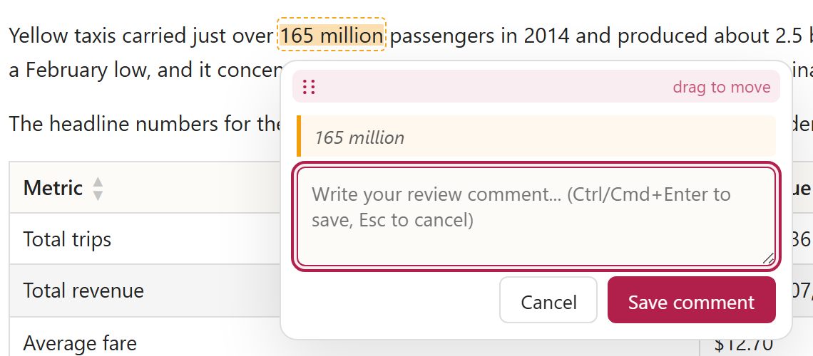

Comment on any HTML,
hand it back to your agent
A code review for your AI's plans and reports. Select any paragraph, table cell, chart, or diagram in a standalone HTML and comment inline exactly where you mean it, then hit Copy all to hand the agent a structured bundle of every note.
 Commentable HTML
Commentable HTML 
The review loop, in four steps
Turn any HTML plan or report into something you comment on inline and round-trip back to the agent - a tight review loop instead of describing changes in prose.
Select
Highlight any paragraph, table cell, chart, diagram node, or code block.
Comment inline
Leave a note in the window that opens right on your selection.
Copy all
Hand the agent one structured bundle of every open comment.
Reload
The agent edits and marks notes handled; handled comments prune away.
Why Commentable HTML
HTML has become the de-facto standard for planning and reporting with AI agents: plans, reports, design docs, and code reviews increasingly arrive as HTML, not Markdown. It is a spatial, richer medium - diffs and call-graphs as boxes and arrows, data as real charts, long documents as navigable sections. (Anthropic makes the same case in "The unreasonable effectiveness of HTML".) But the moment you want to revise that artifact the loop breaks down: you alt-tab between the render and the chat and describe in prose what to change. The richer the document, the more painful the round-trip.
Commentable HTML closes that loop - it is a code review for your plan. Select any paragraph, table cell, chart, diagram, or code block and comment in place, exactly where you mean it, then one Copy all hands the agent a structured bundle of every note. It drastically shortens the AI planning and iteration loop: you stay in the document and return to the chat only at the end.
Chat, Markdown, HTML - or a tight loop?
Your agent can draft a brilliant plan in seconds. The real bottleneck is everything after - reading it, reacting to it, and getting your changes back into the model. Where that review happens decides how fast you actually move.
| Where you plan | Handles a big plan | Visual richness | Interactive | In-place review | Review loop |
|---|---|---|---|---|---|
| Chat / terminal | Poor | None | No | No | Painful |
| Markdown file | OK / Need viewer | Limited | No | No | Manual |
| Plain HTML | Good | Rich | Yes | No | Out-of-band |
| Commentable HTML | Good | Rich | Yes | Yes | Tight |
- In the chat window. The plan scrolls past in a terminal or chat app and is gone. Long plans are a chore to navigate and hard to keep or share - great for a sentence, hopeless for a spec.
- In a Markdown file. It survives, but raw Markdown is a slog to read and even a viewer stays flat: no real tables, diagrams, or charts. Few teammates read a 300-line
.md. - In plain HTML. Dense, structured, and nice to look at. But review still breaks: you read in the browser, then switch to the chat and describe, in words, what to change and where. Out-of-band and slow.
- With Commentable HTML. An even richer HTML - plus review in place. Comment on the exact sentence, table cell, chart, or diagram node; one Copy all hands the agent every note. The loop collapses to a single tight cycle.
Install
Works with both Claude Code and the GitHub Copilot CLI, and is invokable from each agent's CLI and Desktop app. Pick your agent, add the marketplace, then install the plugin.
copilot plugin marketplace add https://github.com/urikanonov/ai-marketplace
copilot plugin install commentable-html@urikan-ai-marketplace
claude plugin marketplace add https://github.com/urikanonov/ai-marketplace
claude plugin install commentable-html@urikan-ai-marketplace
- Download the ZIP above.
- In Claude (Desktop or claude.ai), open Settings > Features and enable Skills (Pro, Max, Team, or Enterprise with code execution).
- Upload the ZIP to add the
commentable-htmlskill, then invoke it in any chat.
 Keep it up to date automatically
Install the auto-updater plugin to fetch new commentable-html releases on session start - always the latest fixes and features, no manual
Keep it up to date automatically
Install the auto-updater plugin to fetch new commentable-html releases on session start - always the latest fixes and features, no manual plugin update.
What you get
A full code-review layer that travels with the document; export to one portable HTML file when you want to share.
Comment on anything
Prose, table cells, code blocks, KQL queries, charts, images, and mermaid diagram nodes are all selectable and commentable.
Rich content, not just prose
Author Chart.js charts, Mermaid diagrams, drag-and-drop triage boards, rendered code diffs (inline or side-by-side), and syntax-highlighted code and KQL snippets - all first-class, and every one of them individually commentable.
Self-contained when you share
By default the layer loads from small companion files for cheap iteration. One click inlines the CSS, review UI, and every comment into a single HTML file you can email, archive, or reopen anywhere - no server and no build step.
Round-trip to the agent
One Copy all hands the agent every comment at once - a Markdown bundle plus a machine-readable id list - so it makes a single coordinated, coherent edit across all your notes instead of a one-at-a-time pass, then marks them handled.
Export as Portable or Offline
Export as Portable inlines the review layer and comments so a review travels in one file. Export Offline goes further: it snapshots the mermaid diagrams and charts and strips every remote loader, so the file opens with no network at all.
Handled comments stay gone
Once the agent marks a comment handled, it is pruned on reload. The HTML file is the single source of truth, not the browser cache.
Comments survive a restart
While you iterate, every comment is saved to your browser's localStorage, so closing the tab, restarting the browser, or rebooting your machine never loses your work - reopen the file and your comments are still there.
Deterministic tools
Ships stdlib-only Python tools and a strict validator so generated documents are correct by construction, not by luck.
Commentable decks
Turn a request into an animation-rich, fixed 16:9 slide deck that is also a commentable document: present it full-screen, toggle comment mode to leave notes on the live slides, navigate with the slide bar or arrow keys, and Export Offline for a network-silent handoff.
Deck engine: a curated, vendored subset of frontend-slides by Zara Zhang (MIT). See Credits.
Navigate long documents
A live table of contents, collapsible sections, and one-click jump from any comment straight to its highlight keep even a long report easy to move through.
No extension, runs everywhere
Opening a generated file to read or comment needs no browser extension, plugin, or install - the whole review layer is plain HTML, CSS, and JavaScript inside the file, so anyone you share it with opens it in any modern browser on Windows, macOS, and Linux. (Authoring new documents uses the commentable-html plugin.)
Only as big as it needs to be
Mermaid and Chart.js travel inside the file so diagrams and charts still render offline - but only in a document that actually has one. A prose-and-code review document drops that 1.3 MB renderer entirely, which is about 59 percent of its size, and what remains is kept out of the head so the top of the file stays readable to ordinary tools.
How the review loop works
Feedback goes back to the agent as structured data, not pasted prose.
Self review
Generate
The agent produces a commentable HTML report.
Comment
You select text and leave inline notes in the sidebar.
Copy all
Hand the agent a Markdown bundle of every open comment.
Reload
The agent acts and marks ids handled; handled comments prune away.
Peer review
Self review first
Run the self-review loop to get the artifact in good shape.
Export as Portable
Download one self-contained copy and share it with a peer.
Peer comments
The peer opens it, adds inline comments, and Exports as Portable again - comments now embedded in the HTML.
Back to the agent
You open their Portable file and Copy all to feed their feedback to the agent.
Review someone's plan
Receive a plan
A colleague sends a plan or report as markdown or HTML.
Convert
Ask the agent to turn it into a commentable HTML with this skill.
Review inline
Add your comments in place, on exactly the parts you mean.
Export and send back
Export as Portable and return it with your comments embedded.
Demo
Real commentable examples, including the flagship showcase deck. Select any text and the Add comment popup appears.
Private by design
Your document and every comment stay on your machine. There is no server, no account, no sign-in, and no telemetry - the review layer runs entirely in your browser as a static file.
Your data stays local
Comments live in one of two places only: your browser's localStorage, scoped to that file, while you iterate, or embedded inside the HTML file itself once you Export. Your document text and your notes are never uploaded or transmitted.
Nothing is sent externally
Your content and comments are never sent to us or to any service. They travel only when you choose to - when you share the exported file, or paste the Copy all bundle to your agent yourself.
You own every copy
The HTML file is the single source of truth, not a cloud account. Keep it, archive it, or delete it and the data is gone - no residual copy lives anywhere else. Comments are keyed to a stable id baked into the document, so when it is served from one web origin, moving or renaming it there keeps your browser-side notes; and an exported file always carries every comment inside it, so a shared or archived copy never depends on any browser store.
Offline and compliance-ready
The only optional network use is loading the Mermaid and Chart.js rendering libraries from a public CDN (library code, not your data). Export Offline snapshots those visuals and strips every remote loader, so the file opens with zero network - fit for air-gapped, sensitive, or regulated material.
Three portability modes
Same document, three ways to assemble it - pick based on whether it stays local, travels, or must work with no network. The graph in each card shows where every part comes from.
Non-portable legacy
References shared companion assets instead of inlining them. New documents are no longer generated this way, but existing ones are opened, validated and edited exactly as before, permanently - the runtime and its companion files are kept for that reason. Migrate one to Portable whenever you like with tools/authoring/to_portable.py.
- Styles + runtime
- skill folder
- Mermaid + charts
- CDN
- Comments
- browser storage
Portable
One self-contained file with the CSS, runtime, and comments inlined. Best when you want to share the document with a peer or keep it as a durable, long-term artifact - one click via Export as Portable.
- Styles + runtime
- inlined
- Mermaid + charts
- CDN
- Comments
- seeded from HTMLthen browser storage
Offline
Everything Portable does, plus the mermaid diagrams and charts are rendered and inlined as snapshots and every remote loader is stripped, so the file opens with zero network - archive it or read it on a plane. One click via Export Offline.
- Styles + runtime
- inlined
- Mermaid + charts
- inlined snapshots
- Comments
- seeded from HTMLthen browser storage
CDN marks the parts that load over the network. A Non-portable or Portable report that uses mermaid diagrams or charts therefore needs an internet connection to render them - static images and the rest of the review layer still work with no network. Export Offline to inline those diagrams and charts as snapshots and drop the network dependency entirely.
Credits
The open-source projects this plugin builds on.
Deck engine: frontend-slides
The built-in commentable-decks capability is powered by a curated, hardened, vendored subset of the frontend-slides skill by Zara Zhang, used under the MIT License (© 2025 Zara Zhang). The upstream deploy and PDF-export scripts are excluded, and a CI gate keeps the vendored subtree pristine.
Changelog
Changes to Commentable HTML. See the full changelog on GitHub.
[1.271.0] - 2026-07-29
- The validator no longer classifies a document as NonPortable because its own authored CONTENT demonstrates the companion markup. It decided the mode by looking for a
<link href="commentable-html.css">/<script src="commentable-html.js">ANYWHERE in the file, so a genuinely self-contained Portable document about commentable-html - one that quotes the legacy loading markup in prose, whichto_portable.pynow deliberately preserves when it migrates such a file - failed validation withcommentableHtmlLayer.mode must be "nonportable", no runtime script found, a missing#cmhAssetBanner, and a companion file that does not exist. The mode determination and every check that follows from it now read the LAYER's own markup: the authored region is excluded, because the layer's references always sit outside it (the stylesheet in<head>before it, the runtime scripts at the end of<body>after it). The region comes from the PARSE, not from marker offsets in the text, so it is exactly the region a browser would agree on - real comment markers, inside the live#commentRoot, outside an inert<template>, never inside CDATA - and a misplaced marker or a<style>straddling one cannot steer the validator into ignoring the real layer instead. It holds in the other direction too: an authored demonstration can never STAND IN for a real reference, so a NonPortable document whose bootstrap banner, watchdog, version meta, or companion reference exists only inside its prose still reports the same error it always did, and a real NonPortable document is classified and checked exactly as before. Because the layer view is only as trustworthy as the region it is derived from, the validator also errors when the CONTENT markers are present in the text exactly once each and in order but the document does not parse with a well-formed region - a marker swallowed by a<script>/<style>body or an inert<template>, a marker outside#commentRoot, or unbalanced markup closing#commentRootmid-region - instead of guessing which side of the broken boundary the markup after it belongs to.
[1.270.0] - 2026-07-29
tools/blocks/chart_block.pyno longer prints chart fragments it could not check. The tool's one promise is that what it emits validates, and it self-validates before printing - but when the siblingvalidatemodule could not be imported (a broken or partial install) the self-check returned "unknown", which the CLI read as success and printed the fragments anyway. So the single protection disappeared exactly on the installs where something was already wrong. It now fails closed for every "could not check" shape - an unimportable validator, a partial install wherevalidate.pyis present but one of its own dependencies is not, a truncatedvalidate.pythat raises on import, avalidatemodule resolved from outside the skill's own tools directory (refused before its module body runs), a missing or corrupt validation template, a validator that crashes, and a validator that answers in an unexpected shape - writing nothing and naming the actual cause. A caller who knowingly wants unchecked output passes the new--allow-unvalidated-output, which emits the fragments with a warning on stderr; it never suppresses a real validation failure, and the CMH-VAL-18 advisory split still applies.
Show 5 older releases
[1.269.0] - 2026-07-29
- The author-time syntax-highlighting guardrail is no longer blind in a Portable document. The check scanned the whole file for
<pre>blocks, so in a Portable document - which inlines the layer CSS and JS, both full of prose mentioning<pre>and<code>- a match starting inside one of those bodies swallowed the author's real code block and the check reported nothing at all. A rawlanguage-XXXblock therefore shipped unhighlighted with no warning, andretrofit.py --no-highlightexited 0 instead of failing closed. Blocks are now LOCATED in a masked view of the document (<script>/<style>bodies and HTML comments blanked to same-length spaces) and every payload is read from the original bytes, so the language, emptiness and highlight state are still decided on what actually ships. The mask is one left-to-right pass over an alternation, so a<scriptnamed inside a comment cannot open a mask that runs to the document's next real</script>- the same one-pass masking now backs the KQL runnable scan, which had that hole too.
- Validator warnings now have one shared fatal/advisory split (
validate.ADVISORY_PREFIXES,is_advisory(),partition_warnings()), honoured byretrofit.py,content_replace.py,chart_block.pyand the--strictand stamping paths offinalize.py,upgrade.pyandvalidate.py. An advisory names something the author cannot clear, so it is always reported but never blocks a fail-closed tool and never withholds thecommentable-html-validatedstamp. Today the set holds exactly one prefix: a code block carrying deliberately hand-written INERT markup, which the authoring tools pass through verbatim by design - without this, the scan fix above would have made such a document impossible to write back or stamp. Markup that is not inert stays FATAL: inertness is decided by a whole-tag allowlist (every<must open a well-formed inline formatting tag carrying at most a quotedclass), so a raw<script>, an<iframe>, anystyle/is/data-*/event attribute, an unquoted attribute, or a stray<keeps blocking - a<pre>body is parsed as markup and that content executes. Text between the tags is escaped source and is never inspected, so a code sample that merely mentionsonclick=orjavascript:is not flagged. The check also fails CLOSED when a raw<script>or<!--opened inside a code block swallows its</code></pre>: it reports the unpaired<pre>rather than silently inspecting nothing. The theme-contrast advisory is deliberately not in the advisory set - its near-miss band ships a concrete--suggestfix, so it is clearable and still fails--strict;retrofit.pykeeps its own long-standing carve-out for it, and now fails closed (every warning fatal) if the validator cannot be imported.upgrade.py --strictlikewise aborts instead of committing when the validator is unavailable, anddeck_validate.py --strict- the command the skill tells deck authors to finish with - shares the same contract, so an advisory-only deck no longer exits 1.
[1.268.0] - 2026-07-29
- An Offline export no longer inlines Chart.js for a document that never calls it. The exporter decided by SHAPE - any
figure.chart canvasorcanvas.cmh-chart- but a canvas carryingdata-cmh-chart-points/data-cmh-chart-sourceis drawn by the runtime's own 2D renderer and never touches Chart.js, so a report whose charts are all built-in shipped roughly a megabyte of dead library in every offline file (and, with no diagram either, the vendored payload with it). The decision is now made on EVIDENCE: the library travels only when the document has a chart canvas the built-in renderer will not draw, or a surviving script that mentions theChartglobal. The superset selector stays load-bearing - an author who attaches their own Chart.js to any canvas, including one that also carries the built-in attributes, still gets the library inlined, and the evidence match is deliberately loose (it covers indirect construction such asconst C = window.Chart; new C(...)and every executable script MIME type) because a false positive only costs bytes while a false negative would ship a chart that never renders. - An offline re-export can no longer accumulate a second copy of an inlined library. The libraries the exporter injects now carry a marker it removes them by, instead of being recognized by their own bundled text. A script that merely names a bundle file (in a comment, say) but uses the
Chartglobal is also no longer removed as if it were a loader shim, and a chart script placed in the document head is moved below the inlined library so it cannot run before it.
[1.265.0] - 2026-07-28
tools/authoring/to_portable.pymigrates an existing NonPortable document into a self-contained Portable one, preserving its authored content, its embedded comments, and its handled ids - the point of migrating rather than regenerating is that review state travels with the document. It is the counterpart toupgrade.py, which deliberately refuses a NonPortable file. Running it twice is a no-op, and a file that is not a commentable-html document is refused rather than rewritten.
- Portable is now the ONLY mode generated, by every creation route.
new_document.pyfollows the resolved TEMPLATE rather than a flag, so the two can never disagree: the default isdist/PORTABLE.html, and a caller that genuinely needs a legacy NonPortable document asks for it explicitly with--template <dist>/NONPORTABLE.html, which still gets the full companion-reference handling.retrofit.pyalso produces a Portable document by default; a legacy one now requires an explicit--nonportableor one of the companion-href options.--nonportableonnew_document.pyis accepted but ignored, and--portableon either tool now simply names the default, so existing callers keep working. - NonPortable documents are opened, validated and finalized PERMANENTLY, with no deprecation deadline. The NonPortable runtime and its companions (
NONPORTABLE.html,commentable-html.{css,js,assets.js}) stay shipped for exactly that reason: existing documents reference them by bare name and would break on the next auto-update if they were dropped. Only CREATING a new NonPortable document by default has gone away.
to_portable.pyneutralizes any raw-text terminator in the companion bytes it inlines, so a stylesheet supplied through--distcan no longer close its<style>element and have the rest parse as live markup - control of a stylesheet used to escalate to arbitrary script execution in a document holding authored content and reviewer comments. The payload is escaped, never silently dropped.- The migration writes through a staged temp file swapped in with
os.replace(the crash-safe helpercontent_replace.pyalready used, now shared as_atomic_io.py). The destination used to be truncated before the replacement bytes existed, so an interrupted or failing write destroyed the document being migrated - reproduced as a 1.4 MB file reduced to zero bytes. - The CONTENT region that decides which companion reference is the real one is now located from line-anchored HTML-comment markers and required to be unique, so reviewer text quoting the marker can no longer invert the region and send the stylesheet into the author's markup; an ambiguous document is refused rather than guessed at. The mode transition parses the layer descriptor as JSON and requires exactly one nonportable-to-portable transition, so a reformatted descriptor can no longer be reported as migrated while still marked nonportable.
- Every anchor is resolved against the document's original bytes and applied in one pass of non-overlapping edits, and elements are matched in a view with HTML comments and raw-text bodies blanked. Untrusted companion text can no longer aim a later step, and a commented-out or quoted copy of a companion reference or of the layer descriptor is never the one rewritten. A companion is matched by the BASENAME of the URL its element points at, so the absolute
file://references the CLI produced by default, the--assets-relative/--copy-assets/--assets-hrefprefixes and?v=cache-busters all migrate rather than being refused; CRLF documents migrate too. Migration finally refuses to write a result that would still reference a companion, so it can never report success on a document that is not self-contained.
[1.264.0] - 2026-07-28
- A wide table no longer breaks words mid-token. Table cells used
overflow-wrap: anywhere, which participates in intrinsic (min-content) sizing, so every cell reported a min-content width of roughly one character and the table layout algorithm collapsed a column to that and shredded its text even while other columns still had spare room - a 14-column table renderedNAMESPACE MOVEasNAMES/PACE/MOVE. Cells now useoverflow-wrap: break-word, which breaks identically once a line is being laid out but is ignored for min-content, so a cell keeps its longest-word width and is only broken when there is genuinely nowhere left to go. - A table that is genuinely too wide for the page now scrolls horizontally inside its own box instead of pushing the whole document sideways. This is the other half of the fix above:
break-wordis ignored for min-content sizing, which is exactly what stops a column being shredded, but it also means a table whose columns cannot fit reports a min-content width larger than its container and escapes it. Every table is therefore rendered inside a.cmh-table-scrollbox - the containment narrow screens already had, now at every width. The wrapper is a real element rather thandisplay: block; overflow-x: autoon the table itself, becausedisplay: blockwraps the rows in an anonymous table box that shrink-to-fits and collapsed a narrow table's columns to their content width (a 2-column table measured 99px instead of 400px) - which also means narrow screens no longer suffer that collapse. A wrapper that actually scrolls is keyboard-focusable and labelled, so it can be scrolled without a mouse, while a table that fits adds no tab stop. A table built at runtime by an author script is contained too, and a table inside a flex or grid parent keeps its width and its placement. A focused scroll box owns the arrow keys in a deck, so its clipped columns stay reachable by keyboard instead of the arrows changing slides. Printing is unaffected: the wrapper reverts tooverflow: visibleso a wide table is never clipped out of a PDF.
[1.262.0] - 2026-07-28
- A document now carries the vendored rich-libraries payload (the gzip+base64 mermaid and Chart.js bundle the Offline export inlines) only when its content actually uses a diagram or a chart, and never in the document head. It used to be stamped into every document unconditionally: measured on the shipped examples it is 1,363 KB, 55 to 61 percent of a 2.3 MB file, and it sat on line 7 - so a prose-and-code review document paid for a renderer it could never call, and any tool that reads the head of a file hit a megabyte-long line immediately. A prose report now goes from 2,301 KB to 938 KB (59 percent smaller) and its longest line from 1,396,078 characters to 631.
- The decision is re-evaluated on every finalize rather than made once when the document is created, so a document that GAINS a diagram after the payload was dropped gets it back and its Offline export keeps working. A document whose content region cannot be located is left alone entirely - never stripped, and never grown.
223 earlier releases in the full changelog on GitHub.